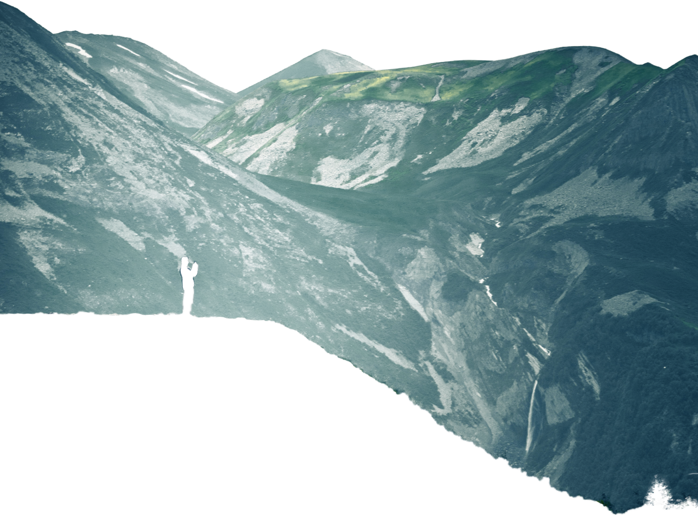
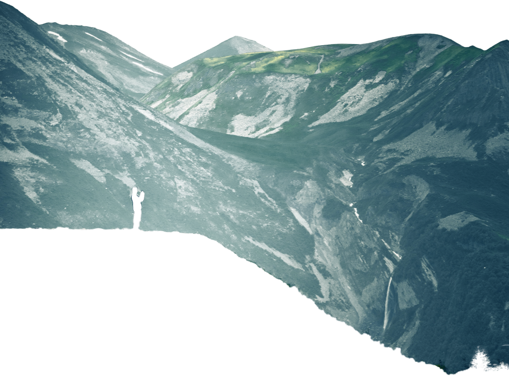

01 Empezar
Determinar tu nivel de senderista puede ser una herramienta importante al planificar futuras excursiones. Esta guía de nivel de senderismo te ayudará a planificar tus rutas según las diferentes clasificaciones de sitios web como All Trails y Modern Hiker. ¿Qué tipo de senderista eres: principiante, moderado, moderado avanzado, experto o mochilero experto?
leer más
02 Fundamentos de senderismo
Escoge el correcto ¡Equipo de senderismo!
Determinar tu nivel de senderista puede ser una herramienta importante al planificar futuras excursiones. Esta guía de nivel de senderismo te ayudará a planificar tus rutas según las diferentes clasificaciones de sitios web como All Trails y Modern Hiker. ¿Qué tipo de senderista eres: principiante, moderado, moderado avanzado, experto o mochilero experto?
leer más
03 A dónde vas es la clave
Comprenda su Mapa y cronograma
Determinar tu nivel de senderista puede ser una herramienta importante al planificar futuras excursiones. Esta guía de nivel de senderismo te ayudará a planificar tus rutas según las diferentes clasificaciones de sitios web como All Trails y Modern Hiker. ¿Qué tipo de senderista eres: principiante, moderado, moderado avanzado, experto o mochilero experto?
leer más